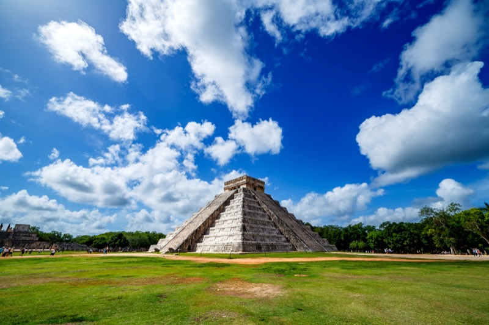
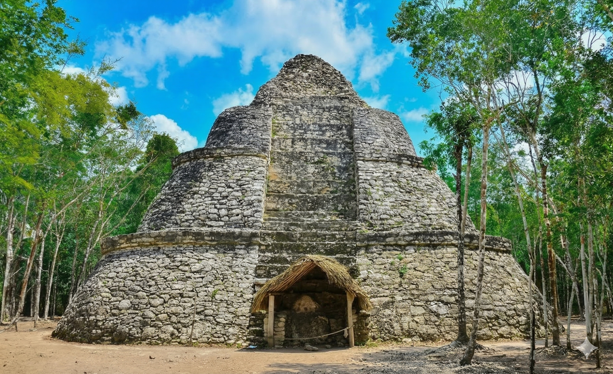

Tulum
This ruin is one of the very few walled cities built by the Maya and the only Maya settlement located on the beach.
Zonas arqueologicas
This ruin is one of the very few walled cities built by the Maya and the only Maya settlement located on the beach.

This sublime mayan city it's one of the seven wonders of the world.

Historical, cultural and natural record of great majesty and excellent conservation.